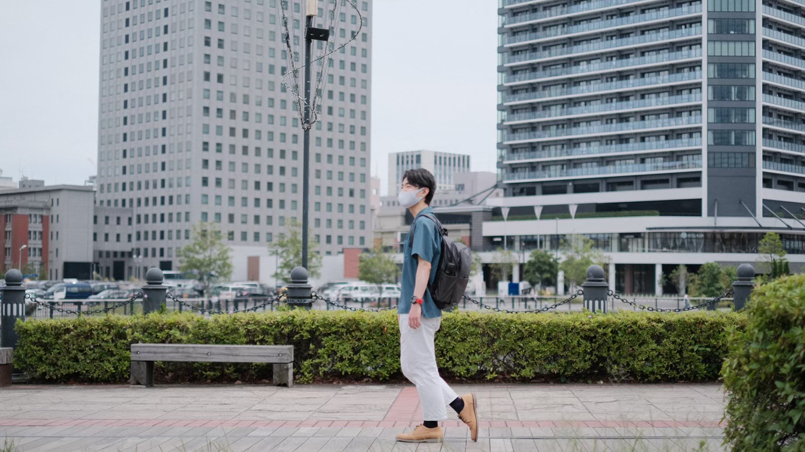
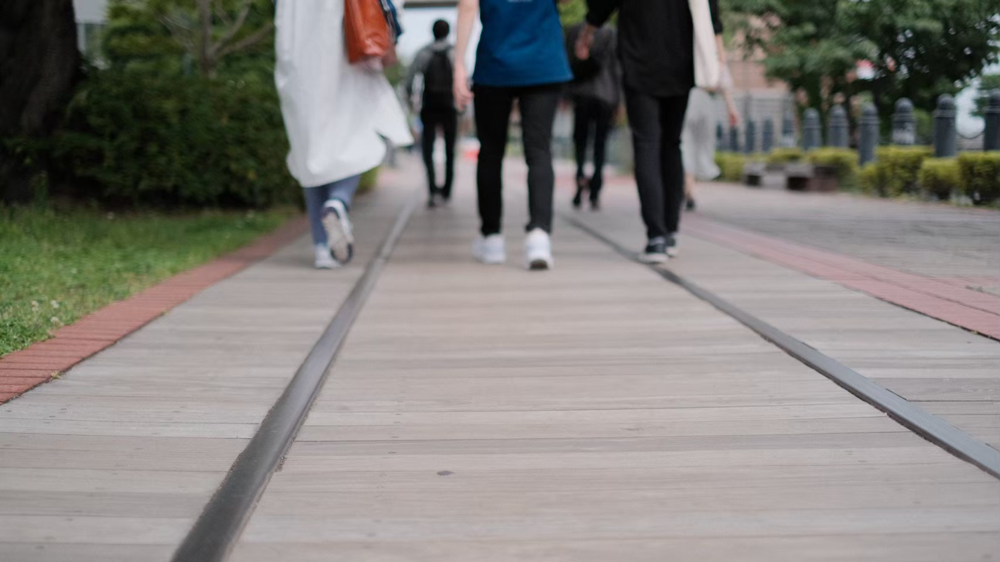
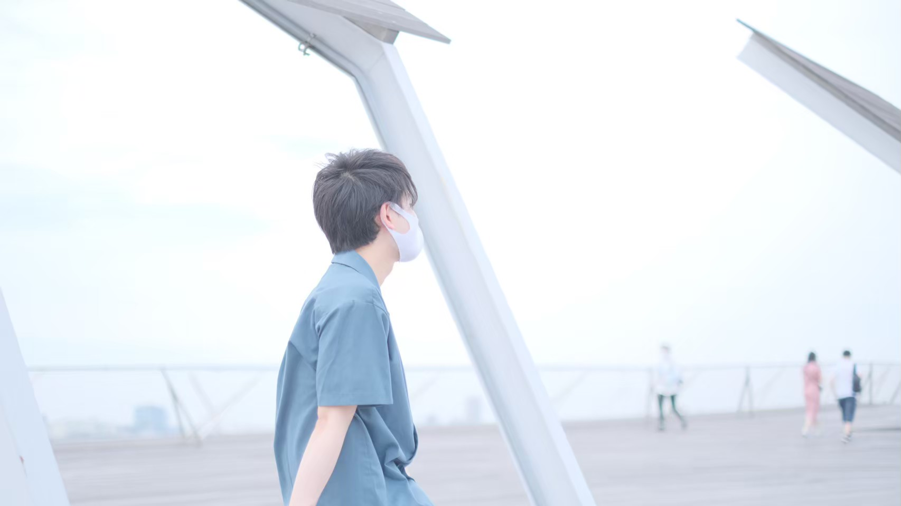
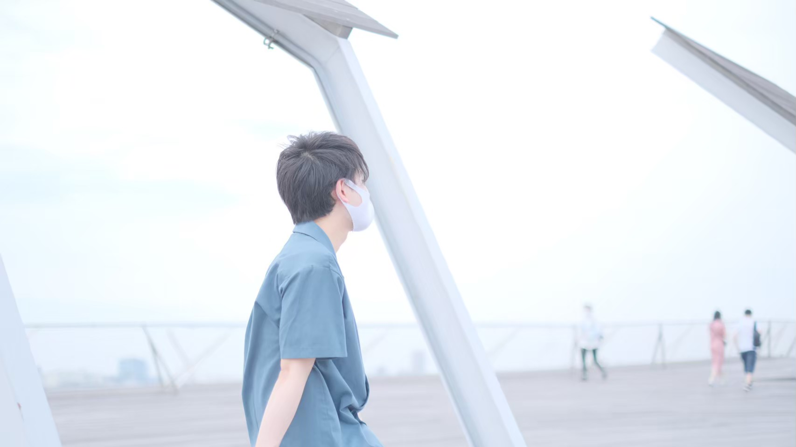

横浜ベイエリア散歩
～みなとみらい～
--/-- 2021
カテゴリー：通常散歩
 神奈川県横浜市中区
神奈川県横浜市中区
今回はとっても有名な観光スポットの一つ『横浜みなとみらい』を散歩してきました。今回はカメラが趣味の4年生メンバーがいい写真を沢山取ってくれたので、写真多めです！！
神奈川県横浜市はとても広く、全国の人が連想する横浜は「横浜ランドマークタワー」や「赤レンガ倉庫」だと思います。（余談ですが：横浜国立大学は横浜市保土ケ谷区山にあり、中区とはまた違った横浜を感じることができる緑豊かなキャンパスです。横浜ってとっても広いんです。）
近未来的なウォーターフロント地区である横浜みなとみら21には日本初の世界最新の都市循環式ロープウェイがあります。
あくまで私たちは散歩サークルのため、汽車道を歩いてきました。
  横浜赤レンガ倉庫
私たちが訪問した時は車の催しが実施されていました。私は今年の7～8月に免許更新が控えているのですが、これまで無事故無違反です。（この記事書いた後にすぐに事故起こしたら泣いちゃう。）
高級車に一度乗ってみたいものですね。最近では高級車をレンタルできるサービスもあるとか。しかし、「わ」ナンバーで大黒PAや辰巳第一PA行ったらダサいですね笑
 横浜港 大桟橋

横浜港 大桟橋

友人にいい感じの写真を撮ってもらいました。被写体の人がかっこよくなくてもカメラの性能と技術と風景が良ければ全体的にいい感じにまとまりますね。
横浜はベイエリア以外にも中華街や横浜駅周辺など魅力的なスポットが沢山あるので是非楽しんでみてください。